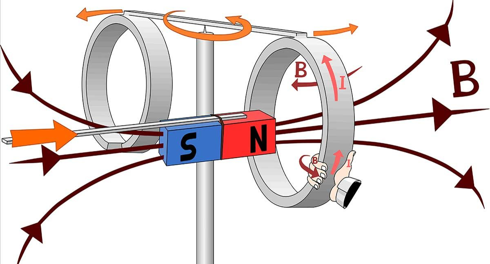

Michael Faraday
Recopilaccion de Datos
| ¿QUE ES? | La inducción electromagnética es el proceso por el cual se puede inducir una corriente por medio de un cambio en el campo magnético.
En nuestro artículo sobre fuerzas magneticas, estudiamos la fuerza que experimentan las cargas en movimiento dentro de un campo magnético. La fuerza que experimenta un alambre por el que pasa corriente debida a los electrones en movimiento cuando esté en la presencia de un campo magnético es un ejemplo clásico. Este proceso también funciona al revés. Tanto mover un alambre a travás de un campo magnético o (de manera equivalente) cambiar la magnitud del campo magnético con el tiempo puede causar que fluya una corriente.
|
 | ||||
|---|---|---|---|---|---|---|
| ¿COMO SE DESCUBRIO? | La ley de Faraday, descubierta por el físico del siglo XIX michael Faraday. Relaciona la razón de cambio de flujo magnetico que pasa a través de una espira (o lazo) con la magnitud de la fuerza electromotriz E inducida en la espira. La relación es
E, equals, start fraction, d, \Phi, divided by, d, t, end fraction
La fuerza electromotriz, o?FEM, se refiere a la diferencia de potencial a través de la espira descargada (es decir, cuando la resistencia en el circuito es alta). En la práctica es a menudo suficiente pensar la FEM como un voltaje, pues tanto el voltaje y como la FEM se miden con la misma unidad, el
volt
|
|
||||
| ¿PARA QUE SE USA? | La ley de Faraday es una relación fundamental basada en las ecuaciones de Maxwell. Sirve como un sumario abreviado de las formas en que se puede generar un voltaje (o fem), por medio del cambio del entorno magnético. |  |
||||

Comentarios (0)